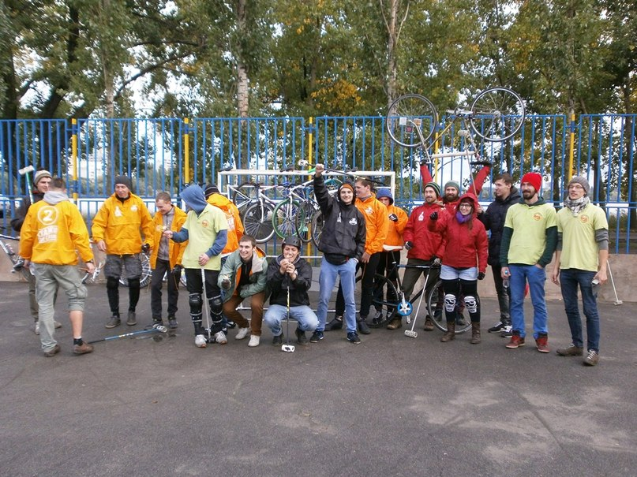
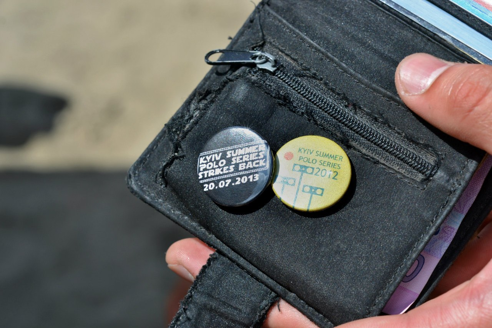
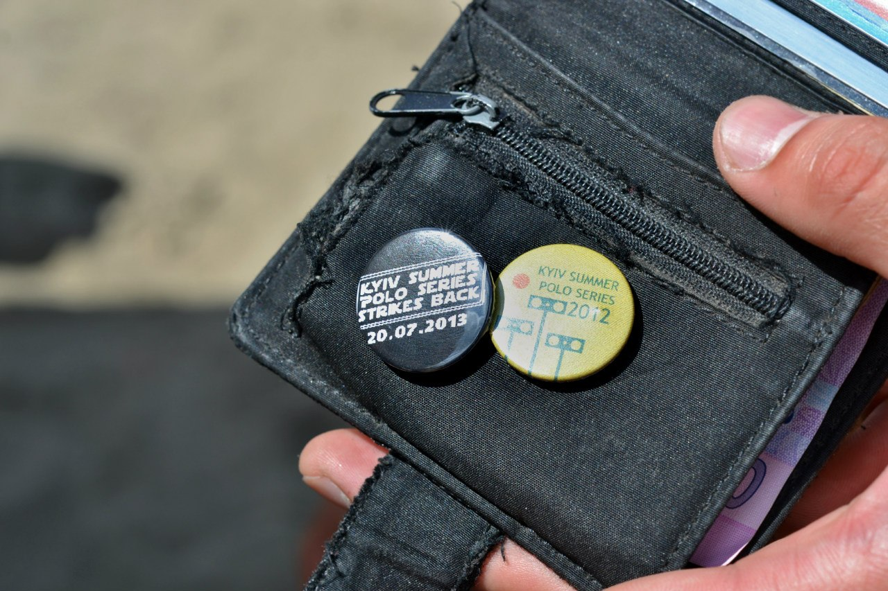

Байк-поло
Содержание
Немного о Байк-поло.

В 2013 году мы с ребятами начали играть в байк-поло в Воронеже. Создали команду, смастерили велосипеды, научились играть.


Мы участвовали на первом и втором турнире по байк-поло в Москве.

Отчёт про соревнования в Москве. Нашу команду пригласили на чемпионат по байк-поло. Старт из Воронежа

Приехали в Москву.

В этот раз призовых мест мы не заняли. Да и призов не было.

Совместное фото со всеми участниками.

Участие в чемпионате по байк-поло от Bicycle Film Festival.
Финальная игра. Наша команда в финале с командой из Курска.


В этот раз наша команда заняла второе место. Вручение призов и общее фото.


Подробнее о чемпионате и больше фото по ссылкам:
- Байк-поло на Bicycle Film Festival. Впечатления организатора
- Байк-поло на Bicycle Film Festival. Первый отчёт с московского турнира
До событий в Москве участвовали в нескольких Курских и Воронежских соревнованиях.
Первый турнир по байк-поло в Воронеже. Совместное фото участников.
Фото с первого турнира по байк-поло в Воронеже
Заметки о Байк-поло
Площадка
Борт высотой не меньше 100 см. Покрытие площадки ровное, твёрдое. Асфальт, бетон, чистая, без песка и др. мусора. Углы площадки должны быть скруглены, или должны быть не ровны 90 градусам.
Разметка. Нужно нанести разметку в центре поля и у ворот.
Место штрафного. Обычно середина длинных бортов. Это место нужно как-то пометить.


Ворота
Размеры ворот 183 на 93 см. Можно собрать из пластиковых водопроводных труб сетки и хомутов. Расстояние от борта не меньше 183 см.


Мяч
Можно использовать мяч для игры в хоккей на траве
Варианты для площадок
- Хоккейная коробка, нужно строить дополнительный борт
- Дворовая хоккейная коробка
- Соорудить
Судейство
- Турнирная таблица
- Два табло от 0 до 5


Регистрацию лучше проводить на месте. Перед составлением таблицы турнира. Таблицу турнира расписать сразу, до турнира. Методом жеребьёвки раздать командам номера. В play-off. выходят 4 команды.
Если круговая, то так:
| Номер тура | Игра 1 | Игра 2 | Игра 3 | Игра 4 | Игра 5 |
|---|---|---|---|---|---|
| 1 тур | 1-10 | 2-9 | 3-8 | 4-7 | 5-6 |
| 2 тур | 1-2 | 9-3 | 8-4 | 7-5 | 10-6 |
| 3 тур | 3-1 | 2-10 | 4-9 | 5-8 | 6-7 |
| 4 тур | 1-4 | 2-3 | 9-5 | 8-6 | 10-7 |
| 5 тур | 5-1 | 4-2 | 3-10 | 6-9 | 7-8 |
| 6 тур | 1-6 | 2-5 | 3-4 | 9-7 | 10-8 |
| 7 тур | 7-1 | 6-2 | 5-3 | 4-10 | 8-9 |
| 8 тур | 1-8 | 2-7 | 3-6 | 4-5 | 10-9 |
| 9 тур | 9-1 | 8-2 | 7-3 | 6-4 | 5-10 |
Оборудование / одежда

 

Видео на польском